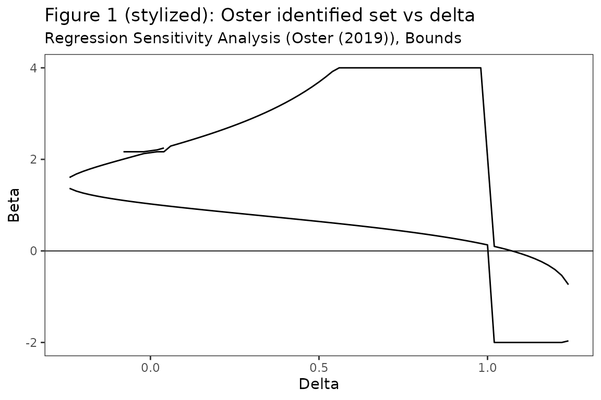
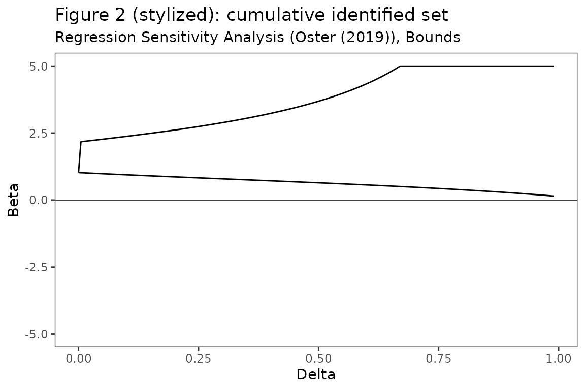
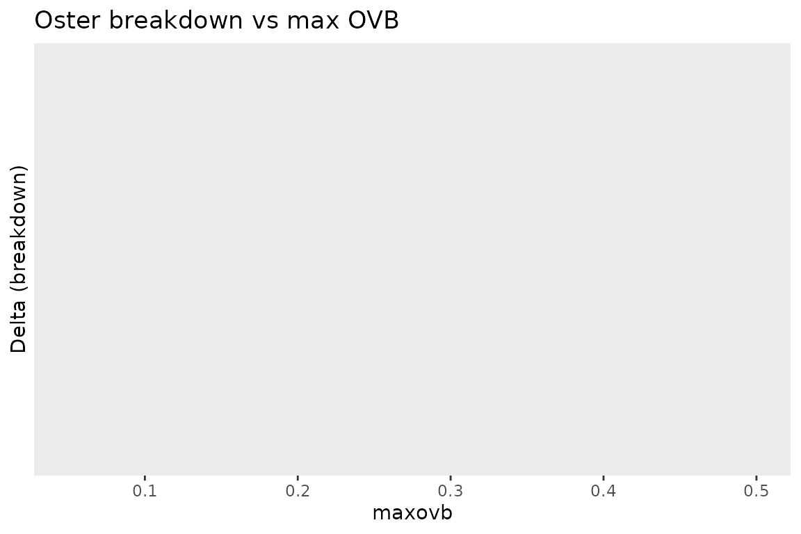

Replication: Masten and Poirier (2026) stylized examples
Source:vignettes/mp2022-stylized.Rmd
mp2022-stylized.RmdThis vignette reproduces the stylized figures of
Masten and Poirier (2026), The Effect of Omitted
Variables on the Sign of Regression Coefficients. The remaining
figures and tables in that paper are meta-analyses across many published
studies; we illustrate the methodology using a
constructed example so that the machinery in regsensitivity
is exercised end-to-end without requiring copy-protected meta-analysis
data.
A stylized data-generating process
We construct a small example where the medium-regression coefficient is positive but Oster’s identified set crosses zero at moderate .
library(regsensitivity)
library(ggplot2)
set.seed(2208)
n <- 5000
w1 <- rnorm(n)
w2 <- rnorm(n)
x <- 0.3 * w1 + 0.5 * w2 + rnorm(n)
y <- 0.8 * x + 0.4 * w1 + 0.6 * w2 + rnorm(n)
dat <- data.frame(y = y, x = x, w1 = w1) # w2 is unobserved!
form <- y ~ x + w1The “true” long-regression coefficient is 0.8; the medium regression
sees an upward-biased estimate because w2 is correlated
with x.
Figure 1: Oster’s identified set
res <- regsen_bounds(form, dat,
analysis = "oster",
delta = seq(-2, 2, 0.02),
r2long = 1)
plot(res, ylim = c(-2, 4),
title = "Figure 1 (stylized): Oster identified set vs delta")
The branches of the cubic in that solve Oster’s equation give the identified set. As from either side, the branches diverge (asymptotes are roots of the cubic’s denominator).
Figure 2: cumulative identified set
res2 <- regsen_bounds(form, dat,
analysis = "oster",
delta = seq(0, 0.99, 0.005),
delta_type = "bound",
r2long = 1)
plot(res2, ylim = c(-5, 5),
title = "Figure 2 (stylized): cumulative identified set")
Table 1: breakdown points
| Quantity | Value |
|---|---|
oster_breakdown_eq,
,
|
1.0725 |
oster_breakdown_bound,
,
|
1 |
| DMP at | 0.9424 |
Effect of a maxovb constraint
Masten-Poirier (2026) extend Oster by adding a maximum omitted variable bias constraint. We illustrate by varying maxovb:
ovbs <- seq(0.05, 0.5, 0.05)
out <- lapply(ovbs, function(M) {
r <- regsen_breakdown(form, dat,
analysis = "oster",
r2long = 1, maxovb = M)
data.frame(maxovb = M, breakdown = r$results$breakdown[1])
})
out <- do.call(rbind, out)
ggplot(out, aes(maxovb, breakdown)) +
geom_line() + geom_point() +
labs(x = "maxovb", y = "Delta (breakdown)",
title = "Oster breakdown vs max OVB")
A tighter cap on the OVB magnitude lifts the breakdown delta.
Meta-analysis tables (paper Tables 2-4)
The paper’s Tables 2-4 aggregate breakdown-point statistics across
many published studies. The package contains the primitives needed to
reproduce those tables
(regsen_breakdown(... maxovb = ...)); plug your own
meta-analysis data in and call:
results <- lapply(study_list, function(study) {
out <- regsen_breakdown(study$formula, study$data,
analysis = "oster",
r2long = 1, maxovb = study$maxovb,
beta = bnd_eq(0))
out$results$breakdown[1]
})